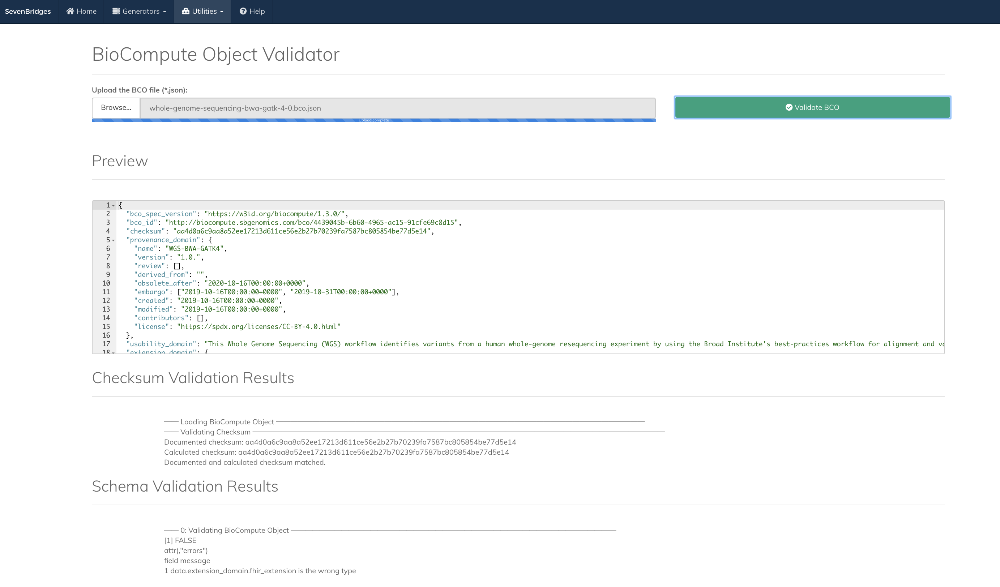

The BCO validator checks an uploaded BCO JSON file with the BCO specification. Results of the check include a Checksum Validation and the Schema Validation.

A screenshot of the BCO validator UI.
1.6.2 Interactive BCO Browser
The Interactive browser allows the user to open and review a BCO file stores on a local machine: